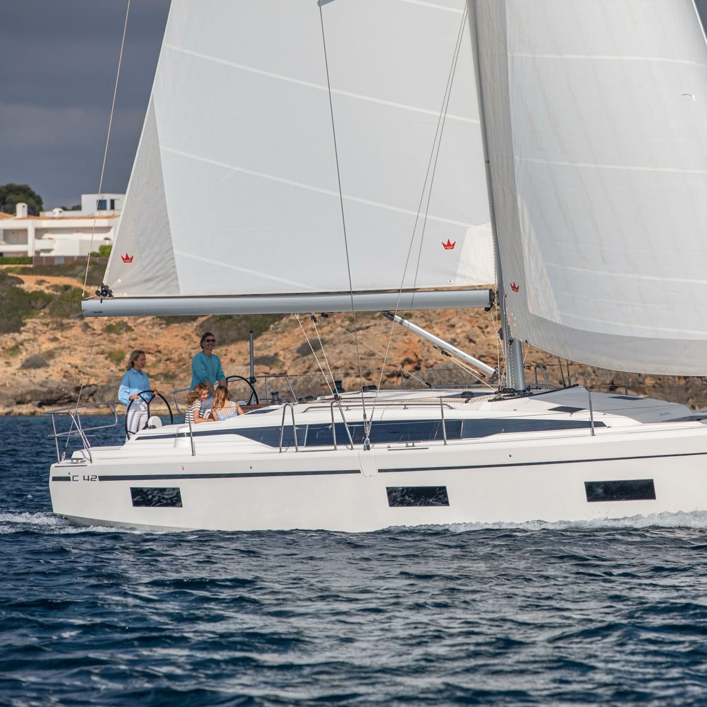
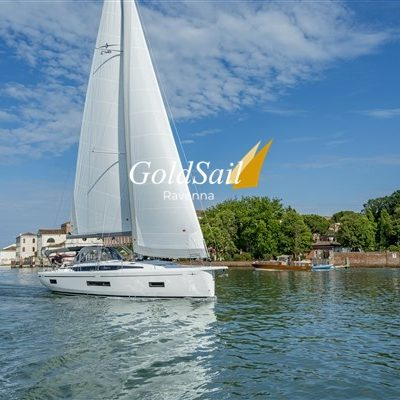
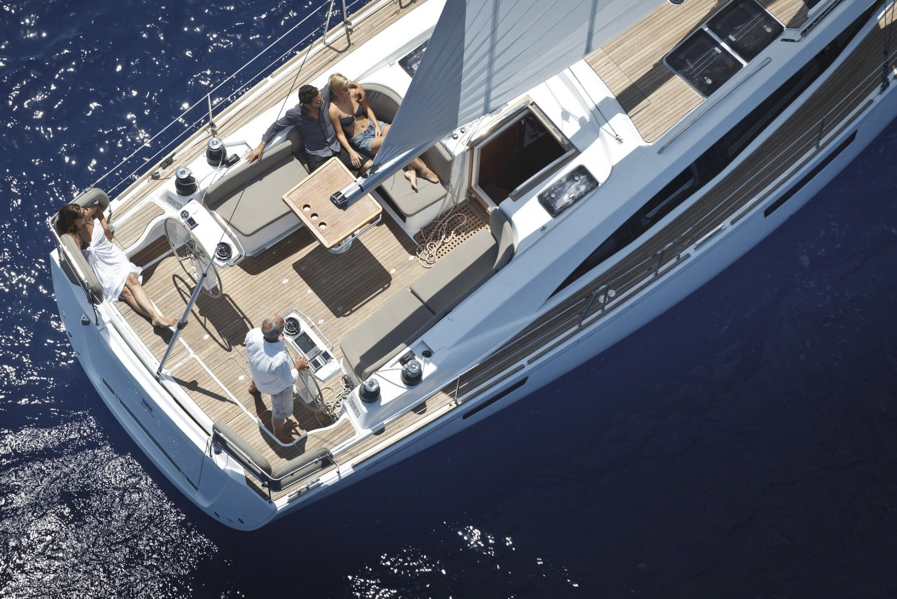
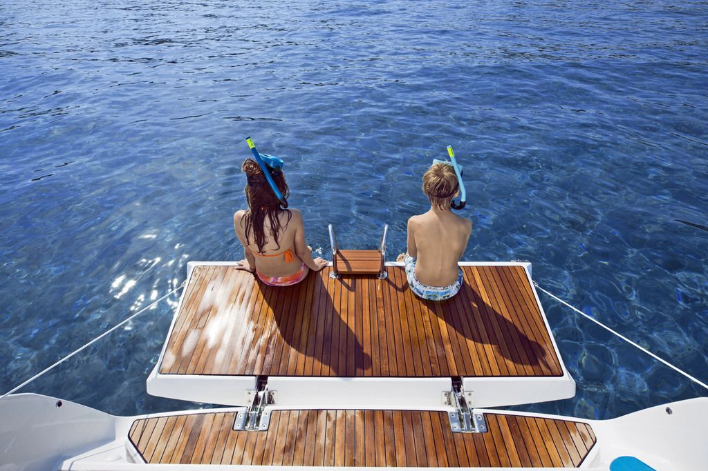
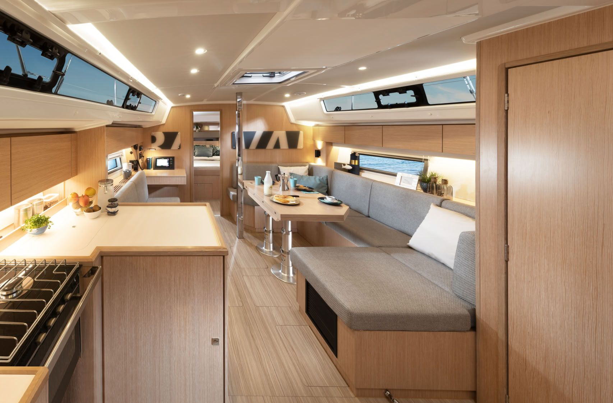
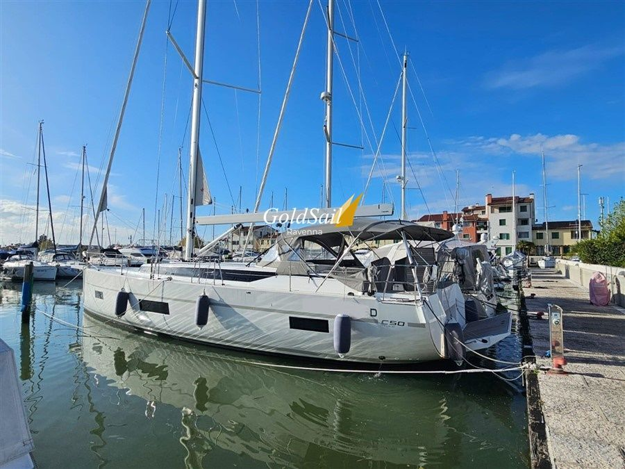

Bavaria C38
La più compatta della C Line, con la carena larga e gli interni luminosi delle sorelle maggiori. Una barca che si porta bene anche in due.
38 piedi, circa 11,6 metri
Bavaria Yachts a Marina di Ravenna
Importatori dal 2003: barche a vela nuove in pronta consegna, usato scelto e preparato da noi, ricambi originali e assistenza in Via Marinara 77.
Vedi le barche in consegna


La più compatta della C Line, con la carena larga e gli interni luminosi delle sorelle maggiori. Una barca che si porta bene anche in due.
38 piedi, circa 11,6 metri
Il centro della gamma: pozzetto ampio, plancetta di poppa che si apre sul mare e spazio sottocoperta per una famiglia o per un gruppo di amici.
42 piedi, circa 12,8 metri
La più grande che teniamo pronta: 13,95 metri di scafo e 4,70 di larghezza, pensata per le crociere lunghe in Adriatico e oltre.
46 piedi, circa 14 metri
Sposta il cursore: le barche entro mezzo metro si accendono in giallo nell'elenco.

Diciotto barche scelte e preparate da noi, vela e motore. Schede tecniche e quotazioni sempre aggiornate: chiedeteci la scheda di quella che vi interessa.



Per un ricambio bastano modello, anno e matricola dello scafo: Elena Veronesi controlla la disponibilità e vi richiama. Le vele per C42, C45 e C46 sono già in magazzino a Marina di Ravenna.
Giorgio Capra ha passato una vita sui campi di regata con il 470, la deriva olimpica. Poi le barche grandi, e il mestiere di venderle: vent'anni con il Cantiere del Pardo, poi X-Yachts e altri cantieri, e un occhio allenato a valutare quasi ogni barca in circolazione.
Michele, il figlio, è salito su un Optimist a cinque anni e non è più sceso. Dal 2003 portano Bavaria in tutto il Nord Est e in Adriatico, dalla sede rinnovata nel porto di Marinara, che è anche officina, magazzino ricambi e punto d'incontro di chi torna da una crociera o da una regata.

48122 Marina di Ravenna
Ufficio 0544 530081 Michele 347 402 2602 Scriveteci